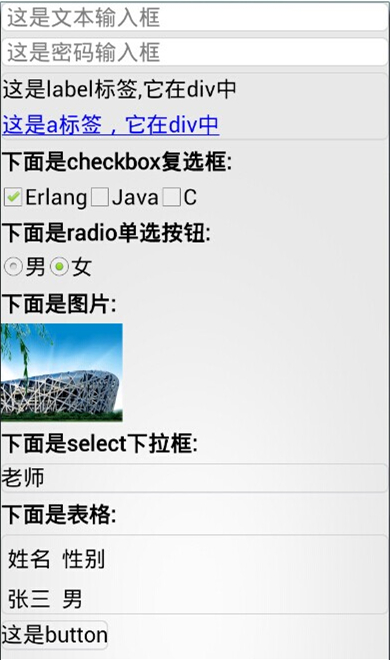

EMP产品中的ERT(客户端组件)用来解释页面的内容，类似浏览器。ERT从标准HTML标签集合中选取了一部分适合在移动终端使用的HTML标签作为EMP的HTML标签子集，称为标准控件。
目前ERT支持的标准控件：
| 名称 | 说明 |
|---|---|
| body | <body></body>之间的文本描述界面 |
| br | 换行 |
| i/em | 斜体 |
| strong/b | 粗体 |
| label | 文本 |
| a | 链接 |
| button | 普通按钮 |
| sumbit | 用于提交form表单的按钮 |
| password | 密码输入框控件 |
| text | 文本输入框控件 |
| hidden | 隐藏域控件 |
| checkbox | 多选控件 |
| radio | 单选控件 |
| segment | tab切换控件 |
| switch | 开关控件 |
| richText | 富文本 |
| img | 图片展示控件 |
| select | 下拉控件（单选） |
| table | 用于使用表格形式显示数据 |
| tr | 代表表格的行 |
| td | 代表表格的列 |
| div | 用于划分区域块 |
| form | 管理表单操作的区域控件 |
这些标准控件的详细说明和使用方法请参照参考手册中基本标签章节。
下面是标准控件的一个简单示例：
<content>
<head>
<style>
</style>
</head>
<body>
<input type="text" hold="这是文本输入框"></input><br/>
<input type="password" hold="这是密码输入框"></input><br/>
<div>
<label>这是label标签,它在div中</label><br/>
<a href="http://www.baidu.com">这是a标签，它在div中</a><br/>
</div>
<b>下面是checkbox复选框:</b><br/>
<input type="checkbox" checked="checked">Erlang</input>
<input type="checkbox">Java</input>
<input type="checkbox">C</input><br/>
<b>下面是radio单选按钮:</b><br/>
<input type="radio" name="test1">男</input>
<input type="radio" name="test1" checked="checked">女</input><br/>
<b>下面是图片:</b><br/>
<img src="http://poster.weather.com.cn/p_files/base/101010100.jpg"/><br/>
<b>下面是select下拉框:</b><br/>
<select>
<option>老师</option>
<option>学生</option>
<option>管理员</option>
</select>
<br/>
<b>下面是表格:</b><br/>
<table>
<tr>
<th><label>姓名</label></th>
<th><label>性别</label></th>
</tr>
<tr>
<td><label>张三</label></td>
<td><label>男</label></td>
</tr>
</table>
<input type="button" border="1" value="这是button"></input>
</body>
</content>
运行效果图:
